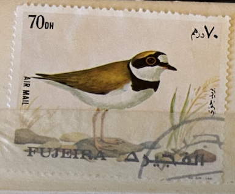
| SOURCE | TITLE| IMAGE MATCH | click to source page |
| www.dreamstime.com | Cancelled Postage Stamp Printed by Fujeira, that Shows ... | 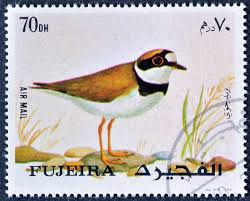 |
| www.ebay.com | Foreign Bird Stamp Used - # 5312 | eBay | 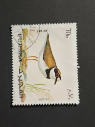 |
| www.etsy.com | Little Ringed Plover - Original Drawing - 6 X 8 Inches - Etsy | 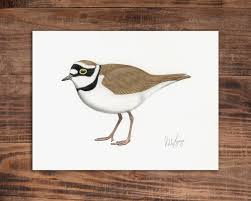 |
| www.ebay.com | National Wildlife Federation Stamp - 1977 MNH - Wilson's ... | 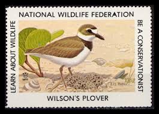 |
| www.fineartstorehouse.com | Little Ringed Plover Print (Side View). Art Prints, Posters ... | 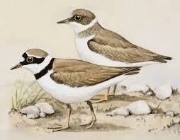 |
| en.wikipedia.org | Long-billed plover - Wikipedia | 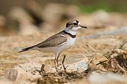 |
| www.etsy.com | Plover Poster | Vintage Watercolor Shorebird Print | Natural ... | 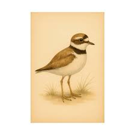 |
| datazone.birdlife.org | Collared Plover Charadrius Collaris Species Factsheet ... | 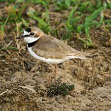 |
| en.wikipedia.org | Kentish plover - Wikipedia | 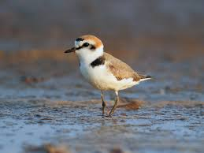 |
| naturerules1.fandom.com | Little Ringed Plover | NatureRules1 Wiki | Fandom | 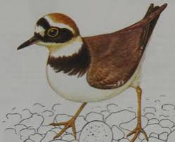 |
| app.birda.org | Little Ringed Plover (Charadrius dubius) identification - Birda | 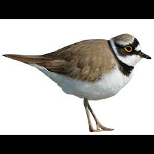 |
| shop.myarthaus.com | Little ringed plover Art Print by Bwiselizzy | Arthaus | 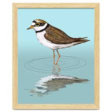 |
| drawingfossils.wordpress.com | Shorebirds everywhere! | drawing fossils | 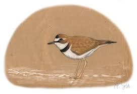 |
| www.birdtheme.org | Little Ringed Plover stamps images | 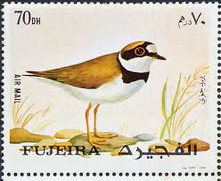 |
| www.discoverwildlife.com | How to identify birds on the move in spring - Discover Wildlife | 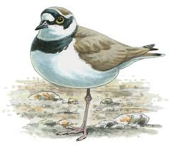 |
| www.acopiancenter.am | Little Ringed Plover - A Field Guide to Birds of Armenia ... | 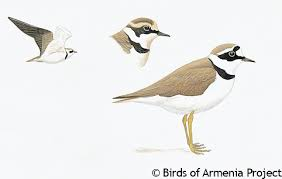 |
| www.ebay.com | FIRST DAY COVER JAPAN B3133 1997 Little Ringed Plover | eBay | 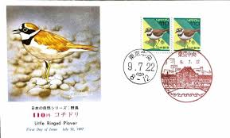 |
| thegraphicsfairy.com | 11 Natural History Bird Prints! - The Graphics Fairy | 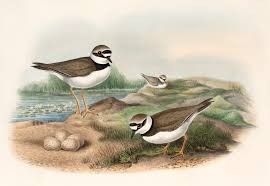 |
| www.inaturalist.org | Kentish Plover (Birds of Alabama) · iNaturalist | 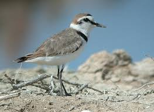 |
| www.monaconatureencyclopedia.com | Charadrius dubius - Monaco Nature Encyclopedia | 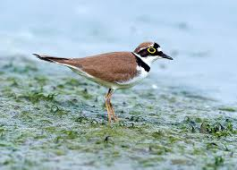 |
| www.facebook.com | common ringed plover bird description and behavior | 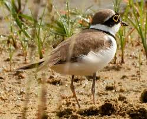 |
| en.wikipedia.org | Snowy plover - Wikipedia | 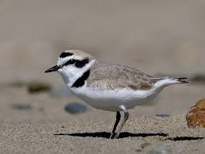 |
| www.birdscaribbean.org | Birds Connect Our World – Day 7 – BirdsCaribbean | 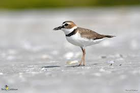 |
| www.etsy.com | 1960 LITTLE RINGED PLOVER Bird Print - Vintage Bird Print ... | 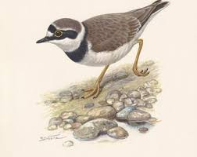 |
| birdfact.com | Kentish Plover Bird Facts (Charadrius alexandrinus) | Birdfact | 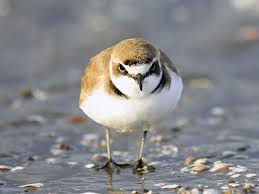 |
| www.alamy.com | Ringed plover wader hi-res stock photography and images ... | 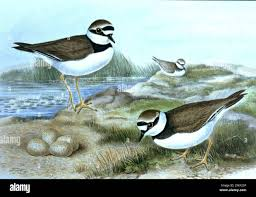 |
| bdlbooks.com | Breeding Birds of the Maltese Islands | 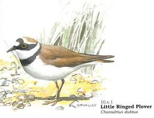 |
| www.youtube.com | Nesting birds – Little ringed plover (Charadrius dubius ... | 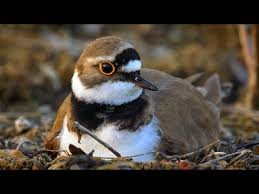 |
| observation.org | Kentish Plover - Anarhynchus alexandrinus - Observation.org | 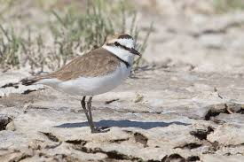 |
| earthlife.net | Little Ringed Plovers (Charadrius dubius) | Earth Life | 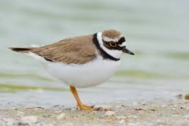 |
| www.hungarianbirdwatching.com | 138 Kentish Plover (Charadrius alexandrinus) | 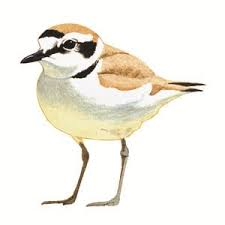 |
| www.birdingisfun.com | Birding Is Fun!: Beautiful Balearic Birds | 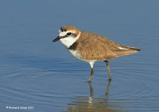 |
| ebird.org | Little Ringed Plover (curonicus) - eBird | 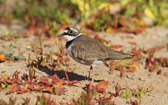 |
| birds.fandom.com | Little Ringed Plover | Birds Wiki | Fandom | 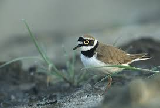 |
| animalia.bio | Little ringed plover - Facts, Diet, Habitat & Pictures on ... | 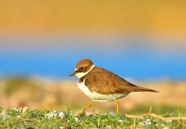 |
| focusingonwildlife.com | Little Ringed Plover Charadrius dubius | Focusing on Wildlife | 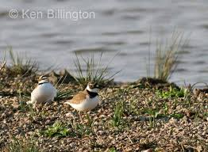 |
| www.facebook.com | Kentish plover bird species description | 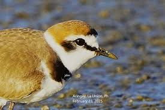 |
| app.birda.org | Collared Plover (Charadrius collaris) identification - Birda | 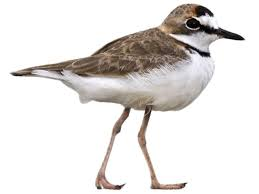 |
| www.istockphoto.com | 310+ Lesser Sand Plover Stock Photos, Pictures & Royalty ... | 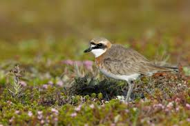 |
| ebird.org | eBird 2017--Year in review - eBird | 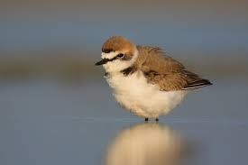 |
| www.shutterstock.com | Fujeira Circa 1972 Cancelled Postage Stamp Stock Photo ... | 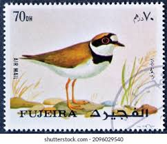 |
| birdsoftheworld.org | Plumages, Molts, and Structure - Wilson's Plover ... | 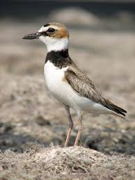 |
| www.instagram.com | Shorebirds in Patagonia on @wingsbirding's Chile tour ... | 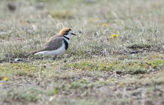 |
| www.inaturalist.org | Little Ringed Plover (Thinornis dubius) · iNaturalist | 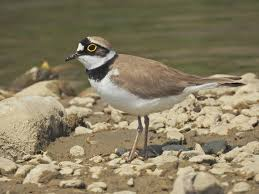 |
| www.thainationalparks.com | Little ringed plover (Charadrius dubius) | 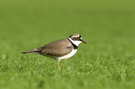 |
| www.youtube.com | Little Ringed Plover Foraging - YouTube | 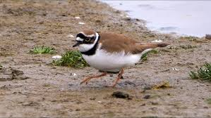 |
| www.kuwaitbirds.org | Kentish Plover | KuwaitBirds.org | 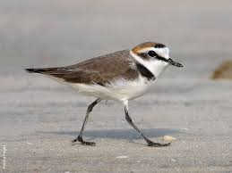 |
| indianbirds.thedynamicnature.com | Birds of India | Bird World: Little ringed plover | 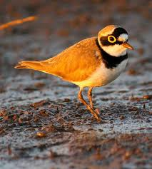 |
| birdfact.com | Little Ringed Plover Bird Facts (Charadrius dubius) | Birdfact | 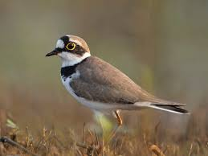 |
| indianexpress.com | Bird Watch: Little ringed plover, a common resident bird ... | |
| www.audubon.org | Wilson's Plover | Audubon Field Guide | |
| www.birds-of-north-america.net | Little Ringed Plover (Charadrius dubius) - LRPL | |
| birdsoftheworld.org | Little Ringed Plover - Thinornis dubius - Birds of the World | |
| www.featherbase.info | Little Ringed Plover (Charadrius dubius) | |
| www.instagram.com | Still sorting through all my photos from last years Brazil ... | |
| www.lifehabitats.com | The Little Ringed Plover | Animal | Life Habitats | |
| www.birdsofiowa.com | Birds of Iowa Charadriidae | |
| www.gettyimages.com | Little Ringed Plover Two Birds Standing Side By Side Side ... | |
| www.oiseaux-birds.com | Little Ringed Plover |